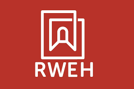

Raoul Wallenberg Emberségháza Egyesület

Rólunk
A szervezetet 2021-ben alapították Budapesten azzal a céllal, hogy
Raoul Wallenberg
emlékére építve erősítsék az emberséget, a toleranciát és a demokratikus értékeket a mai társadalomban.
Létrejöttének fő oka Wallenberg emlékének méltó ápolása és a fiatalok bevonása olyan programokon keresztül, amelyek erkölcsi érzéküket fejlesztik.
Tevékenységei között szerepel a társadalmi párbeszéd elősegítése vitaklubokkal és beszélgetésekkel.
Emellett a holokauszt-emlékezet fenntartása is fontos feladatuk, amelyet kiállítások és történelmi séták révén valósítanak meg.
További céljuk a közösségépítés és a példamutatás, amelyet díjakkal és elismerésekkel is támogatnak.
Fejlesztők: Magos Balázs István, Bohus Balázs, Juhász Máté, Hegedűs Marcell